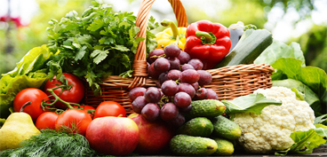
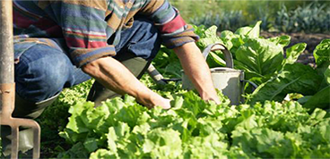
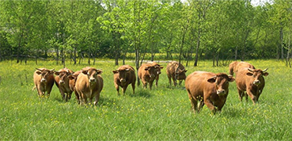

BIO ZEN
Les aliments biologigues, communément appelés «bio», sont des aliments produits sans l’utilisation de produits chimique.
BIODIVERSITE
Les pratiques biologiques encouragent la diversité des cultures et des espèces, contribuant ainsi à maintenir un écosystème plus équilibré.
VALEUR NUTRITIONNELLE
Bien que les recherches ne soient pas toujours concluantes, certaines études suggèrent que les aliments biologiques peuvent contenir des niveaux plus élevés.
BIEN-ETRE ANIMAL
Dans l’agriculture biologique, les animaux sont élevés dans des conditions plus naturelles, avec un accès à l’extérieur
ABSENCE DE PRODUITS CHIMIQUES
TOXIQUES
Les agriculteurs biologiques n’utilisent pas de pesticides et d’engrais synthétique,ce qui réduit l’exposition aux résidus de produits chimiques toxiques dans les aliments.